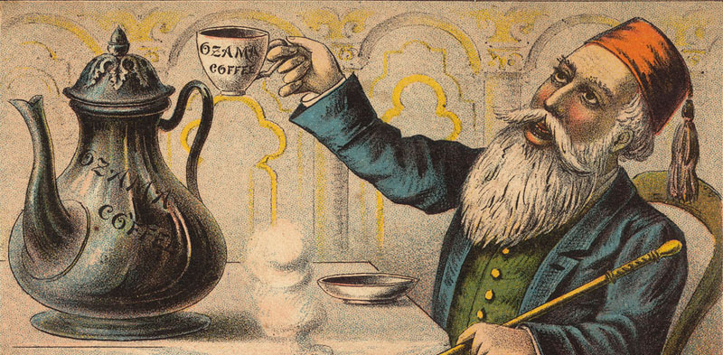
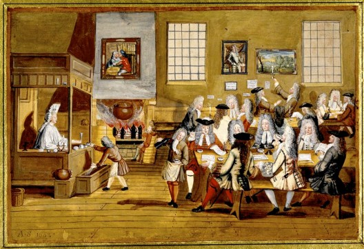
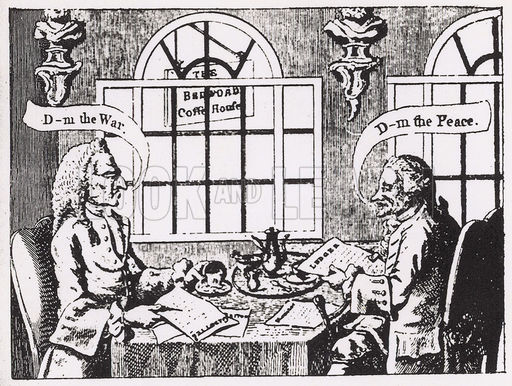
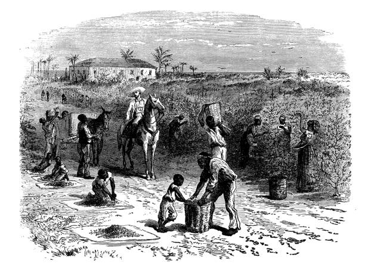

Era penemuan biji kopi dimulai sekitar tahun 800 SM, pendapat lain mengatakan 850 M. Pada saat itu, banyak orang di Benua Afrika, terutama bangsa Etiopia, mengonsumsi biji kopi yang dicampurkan dengan lemak hewan dan anggur untuk memenuhi kebutuhan protein dan energi tubuh. Penemuan kopi sendiri terjadi secara tidak sengaja, ketika penggembala bernama Khalid—seorang Abyssinia—mengamati kawanan kambing gembalaannya yang tetap terjaga bahkan setelah matahari terbenam, setelah memakan sejenis buah beri. Ia pun mencoba memasak dan memakannya. Kebiasaan ini kemudian terus berkembang dan menyebar ke berbagai negara di Afrika. Namun, metode penyajiannya masih menggunakan metode konvensional. Barulah beberapa ratus tahun kemudian, biji kopi ini dibawa melewati Laut Merah dan tiba di Arab dengan metode penyajian yang lebih maju.
Penyebaran Kopi di Arab

Penyebaran Kopi di Arab
Bangsa Arab yang memiliki peradaban yang lebih maju daripada bangsa Afrika saat itu, tidak hanya memasak biji kopi, tetapi juga direbus untuk diambil sarinya. Pada abad ke-13, umat Islam banyak mengonsumsi kopi sebagai minuman penambah energi saat beribadah di malam hari. Kepopuleran kopi pun turut meningkat seiring dengan penyebaran agama Islam pada saat itu hingga mencapai daerah Afrika Utara, Mediterania, dan India.
Pada masa ini, belum ada budidaya tanaman kopi di luar daerah Arab karena bangsa Arab selalu mengekspor biji kopi yang infertil (tidak subur) dengan cara memasak dan mengeringkannya terlebih dahulu. Hal ini menyebabkan budidaya tanaman kopi tidak memungkinkan. Barulah pada tahun 1600-an, seorang peziarah India bernama Baba Budan berhasil membawa biji kopi fertil keluar dari Mekah dan menumbuhkannya di berbagai daerah di luar Arab.
Kopi Mencapai Pasar Eropa

Penyebaran Kopi di Eropa
Biji kopi dibawa masuk pertama kali ke Eropa secara resmi pada tahun 1615 oleh seorang saudagar Venesia. Ia mendapatkan pasokan biji kopi dari orang Turki, namun jumlah ini tidaklah mencukupi kebutuhan pasar. Oleh kerena itu, bangsa Eropa mulai membudidayakannya. Bangsa Belanda adalah salah satu negara Eropa pertama yang berhasil membudidayakannya pada tahun 1616. Kemudian pada tahun 1690, biji kopi dibawa ke Pulau Jawa untuk dikultivasi secara besar-besaran.[butuh rujukan] Pada saat itu, Indonesia masih merupakan negara jajahan Kolonial Belanda.
Mencapai ke Martinik, Prancis

Kopi Mencapai ke Martinik, Prancis
Pada sekitar tahun 1714-an, Raja Prancis Louis XIV menerima sumbangan pohon kopi dari bangsa Belanda sebagai pelengkap koleksinya di Kebun Botani Royal Paris, Jardin des Plantes. Pada saat yang sama, serorang angkatan laut bernama Gabriel Mathieu di Clieu ingin membawa sebagian dari pohon tersebut untuk dibawa ke Martinique. Akan tetapi, hal tersebut ditolak oleh Louis XIV dan sebagai balasannya, ia memimpin sejumlah pasukan untuk menyelinap masuk ke dalam Jardin des Plantes untuk mencuri tanaman kopi.
Keberhasilan Gabriel Mathieu di Clieu membawa tanaman kopi ke Martinik merupakan suatu pencapaian yang sangat besar. Hal ini disebabkan budidaya tanaman kopi di sana cukup baik. Hanya dalam kurun waktu 50 tahun, telah terdapat kurang lebih 18 juta pohon kopi dengan varietas yang beragam. Progeni inilah yang menjadi salah satu sumber dari kekayaan jenis kopi di dunia.
Bunga Kopi untuk Brasil

Sejarah Kopi di Brazil
Pada tahun 1727, pemerintah Brasil berinisiatif untuk menurunkan harga pasaran kopi di daerahnya, karena pada saat itu kopi masih dijual dengan harga tinggi dan hanya bisa dinikmati oleh kalangan elite. Oleh karena itu, pemerintah Brasil mengirimkan agen khusus, Letnan Kolonel Francisco de Melo Palheta, untuk menyelinap masuk ke Prancis dan membawa pulang beberapa bibit kopi. Perkebunan kopi di Prancis memiliki penjagaan yang sangat ketat sehingga hal tersebut tidak memungkinkan. Palheta pun mencari jalan lain dengan cara mendekati istri gubernur. Sebagai hasil kerja kerasnya, ia membawa pulang sebuah buket berisi banyak biji kopi yang diberikan oleh istri gubernur seusai jamuan makan malam. Dari pucuk-pucuk inilah bangsa Brasil berhasil membudidayakan kopi dalam skala yang sangat besar sehingga bisa dikonsumsi oleh semua orang.